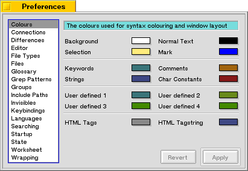
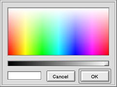

Colours
Pe uses colours extensively. As you can see there are four main groups of colours. The first group determines the colours used for the window background, the normal text, the selection and the emacs Mark.
The second group of colours affects the colours used for syntax-colouring source files. Keywords, comments, strings and character constants are recognized and coloured accordingly.
The third group of colours determines the colours used for the keywords the user has defined. To learn more about keywords read the section dealing with them.
The fourth group of colours determines the colours used when syntax colouring HTML files. Since HTML files have different elements from other structured files, they have their own colourscheme. The Tags, Anchor and Image colour are straightforward. The Tagstring colour is used for strings inside tags. This is extremely useful for debugging HTML; after all, when you forget a quote inside a tag this will show immediately.
If you click on one of the colours or its label, a colour picker will appear. You can use this colour picker to select a colour by clicking inside the colour square. You can change the brightness of the colour by moving the slider that is beneath the colour square. In the pane on the left-bottom side you will see two colours: one is the previous colour, the other colour is the newly selected colour.

Last updated: 11/13/98
Copyright 1997,1998, © Hekkelman Programmatuur,
info@hekkelman.com